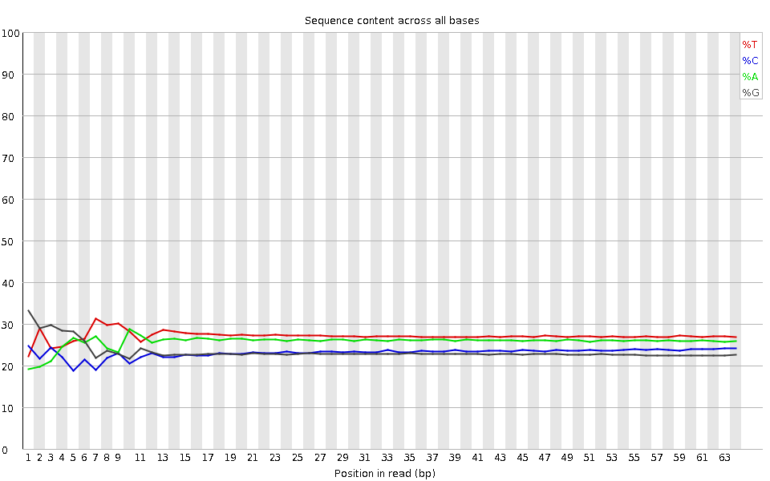
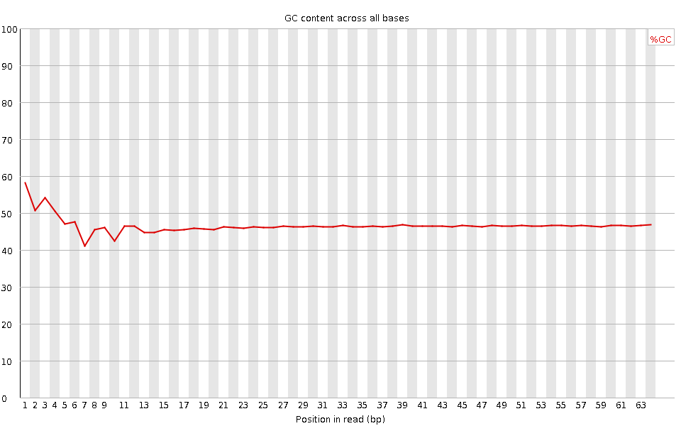
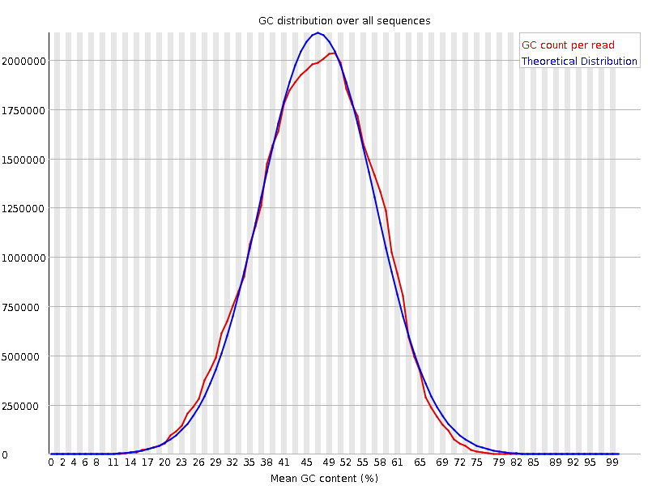
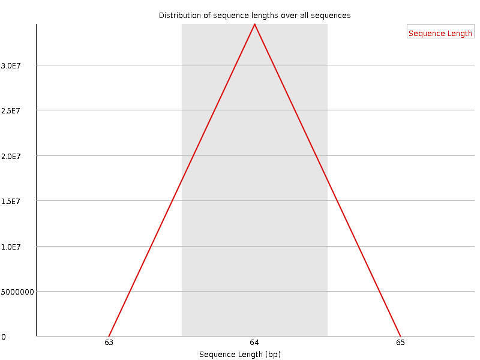
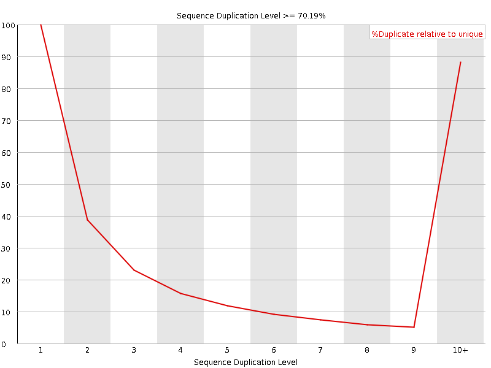
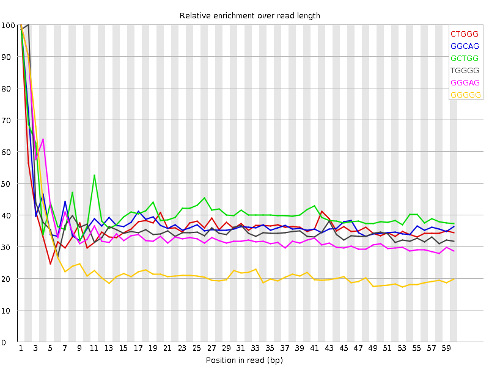

![[OK]](Icons/tick.png) Basic Statistics
Basic Statistics
| Measure | Value |
|---|---|
| Filename | SRR315313_pe_1.f.fastq |
| File type | Conventional base calls |
| Encoding | Sanger / Illumina 1.9 |
| Total Sequences | 34475847 |
| Filtered Sequences | 0 |
| Sequence length | 64 |
| %GC | 46 |
Per base sequence quality

Per sequence quality scores

![[WARN]](Icons/warning.png) Per base sequence content
Per base sequence content

![[FAIL]](Icons/error.png) Per base GC content
Per base GC content

Per sequence GC content

Per base N content

Sequence Length Distribution

Sequence Duplication Levels

Overrepresented sequences
No overrepresented sequences
Kmer Content

| Sequence | Count | Obs/Exp Overall | Obs/Exp Max | Max Obs/Exp Position |
|---|---|---|---|---|
| CTGGG | 3905890 | 2.2939832 | 6.2302256 | 1 |
| GGCAG | 3650470 | 2.2550623 | 5.9340653 | 1 |
| GCTGG | 3650505 | 2.1439922 | 5.160903 | 1 |
| TGGGG | 3266865 | 1.8993838 | 5.19884 | 2 |
| GGGAG | 2923710 | 1.7879498 | 5.129919 | 1 |
| GGGGG | 2556865 | 1.7273804 | 7.0879707 | 1 |
| GGGGA | 2739365 | 1.6752164 | 6.5222 | 1 |
| GTGGG | 2640195 | 1.5350324 | 6.482765 | 1 |
| GGGGT | 2562755 | 1.490008 | 5.641001 | 1 |
| GTGTG | 2601765 | 1.3018198 | 7.9188013 | 1 |
| TGTGT | 2986610 | 1.2860641 | 6.6109405 | 2 |
| TACAA | 2527210 | 1.100865 | 6.1399384 | 6 |
| GTACA | 2133555 | 1.0267289 | 6.726429 | 5 |
| CGGGG | 1351075 | 0.92203707 | 6.496213 | 1 |
| TGTAC | 1993040 | 0.91186064 | 6.2766137 | 4 |
| GTGTA | 1853760 | 0.83960915 | 6.50265 | 3 |